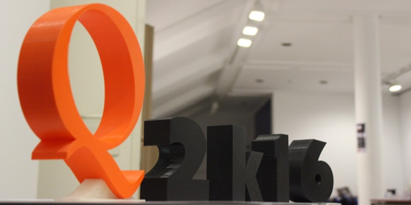

**<span
style=“font-family: "georgia" , "times new roman" , serif;“> **
Grandes profesionales de toda España unidos con los mismos objetivos:
concienciar y enseñar.
Durante los días 16 y 17 de septiembre ha tenido lugar Qurtuba. Congreso
de seguridad celebrado en la ciudad de Córdoba que atrae a centenares de
interesados en ciberseguridad.
Entre los organizadores encontramos a Miguel Ángel Arroyo y Edu Sánchez.
Dos profesionales dedicados a la seguridad y la enseñanza cuya pasión es
aprender y compartir. Así nos lo trasmiten en cada evento de seguridad
organizado por ellos mismos o a los que asisten, no solo en Córdoba,
sino en toda España. Como fue el celebrado el día previo a Qurtuba,
“Hack&Beers”.
Un total de 13 ponentes y diversos talleres se han desarrollado durante
estos días.
Introducción
A continuación, un breve resumen de las ponencias más destacadas.
**Josep Bardallo, executive manager en Svt Cloud.
*“Seguridad en entornos hospitalarios & iOT”.***
Nos destaca la gran cantidad de iOT utilizados en hospitales e
instituciones sanitarias pensados para salvar vidas y avanzar en
resultados de pacientes, cuya labor cumplen muy bien, pero… ¿Qué pasa
con la seguridad de estos aparatos?… Los fabricantes se olvidan de
ella, olvidando que todos están conectados de una manera u otra a
Internet y, por lo tanto, disponibles para los cibercriminales.
{kind=link}
Con una simple búsqueda de cámaras de vigilancia a través de
Shodan nos “cuela” en centros de educación y
centros penitenciarios entre otros lugares, donde han olvidado, una vez
más la seguridad dejando la configuración por defecto del fabricante.
Daniel Medianero “Marketing Service Manager” en s21sec.
**“Hackeando las emociones: una nueva visión de la ingeniería
soial”.**
{kind=link}
Daniel nos invita a analizar el comportamiento de los seres humanos, de
nosotros mismos, la importancia del lenguaje no verbal y de toda la
información que nos trasmite, que, en muchas ocasiones, por
desconocimiento, no le prestamos la atención que deberíamos.
{kind=link}
Con ejemplos de la vida cotidiana, o televisivos, nos enseña desde quién
está intentando establecer un simple “coqueteo” a quién pretende dejar
claro que es “su territorio”, su poder en ese momento o sobre la
situación.
Y lo que es más importante, la fuerza que tienen estas técnicas para el
atacante, siendo utilizadas para elegir a la víctima que considera más
vulnerable o fácil de “manejar”.
Del último de los ponentes que os hablaremos es **Francisco J Rodríguez,
miembro de INCIBE** con su conferencia ***“Is it a game or is it
real?”***
{kind=link}
Al igual que Josep Bardallo, Francisco Rodríguez nos trasmite como iOT
se encuentra cada vez más extendido y más desarrollado, pero, no más
seguro.
Es decir, cada vez son más los aparatos dentro de un hogar que se
encuentran conectados, expuestos (teléfono, tablet, luces, frigorífico…
¡hasta el WC!)
{kind=link}
¿De verdad creemos que estamos a salvo? Grandes empresas se han visto
afectadas por ataques de cibercriminales ¿Qué nos hace pensar que los
siguientes no podemos ser nosotros?
Nos hace reflexionar sobre si esto es necesario ya que, por ganar en
comodidad, exponemos nuestra seguridad, nuestra vida privada.
Francisco nos muestra como desde INCIBE estudian a los cibercriminales a
través de HoneyPot, sistemas con vulnerabilidades expuestos en la red
para obtener toda la información posible de cómo actúa el cibercriminal
y poder combatirlo
{kind=link}
Entre estos ponentes, se encuentran muchos otros, los cuales podéis ver
en la programación
En el segundo día del congreso, se realizaron talleres sobre diferentes
temas de concienciación, ingeniería social, análisis forense, etc
Cada uno de ellos con diferentes niveles destinados a todo el público
que se está iniciando en estos caminos o el que ya lleva unos pasitos.
Además de conferencias y talleres, durante el congreso ha tenido lugar
un CTF, “Capture The Flag”
proporcionándole a los ganadores la entrada a cybercamp 2016.
Sin duda alguna, es uno de los mejores congresos de seguridad
informática en la ciudad de Córdoba donde desvirtualizas a profesionales
y adquieres nuevos conocimientos.
A través de twitter pueden ver toda la actividad producida por este
evento con el hastag #Q2k16 .
Si este año te lo has perdido, no dejes que se te escape la siguiente
edición en @qutubacon nos mantiene informados.
Lucía Expósito Ortega
{kind=link}
{kind=link}